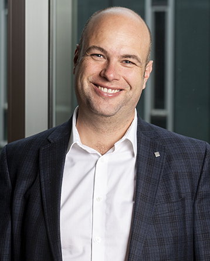

Technical Keynote Speaker: Sebastian Scherer
Resilient Autonomy in Smoke and Other Environmental Degradation
Abstract
Robots show great promise if they can get out of the lab into the field and go beyond a single-operator per robot paradigm. However, the unstructured nature of the real-world requires nuanced decision making of the robot. In this talk I will outline some of our approaches, progress, and results on multi-modal sensing, providing nuanced perception inputs, as well as navigation in difficult terrain, and extensions to multi-robot teams, and future directions of our research.
Bio
|
 |
Sebastian Scherer is an Associate Research Professor at the Robotics Institute (RI) at Carnegie Mellon University (CMU). His research focuses on enabling autonomy in challenging environments and previously led CMU’s entry to the SubT challenge. He and his team have shown several firsts for autonomy for flying robots and off-road driving . Dr. Scherer received his B.S. in Computer Science, M.S. and Ph.D. in Robotics from CMU in 2004, 2007, and 2010.
|
|